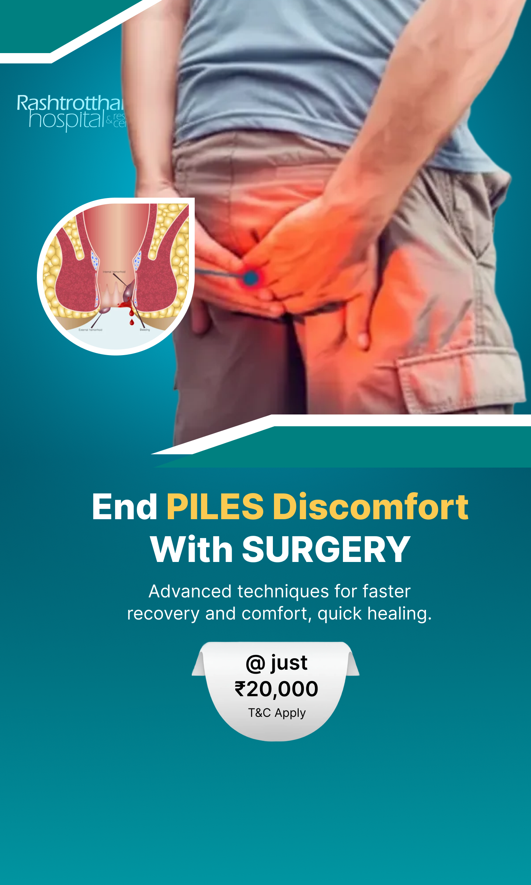
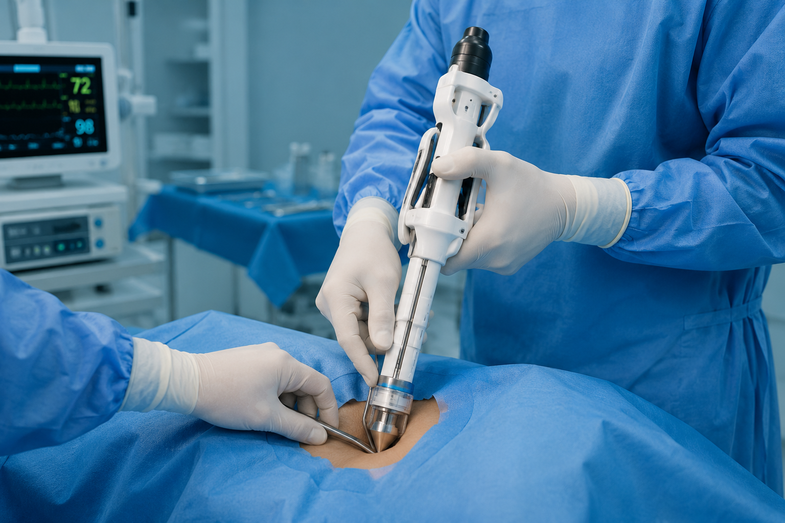
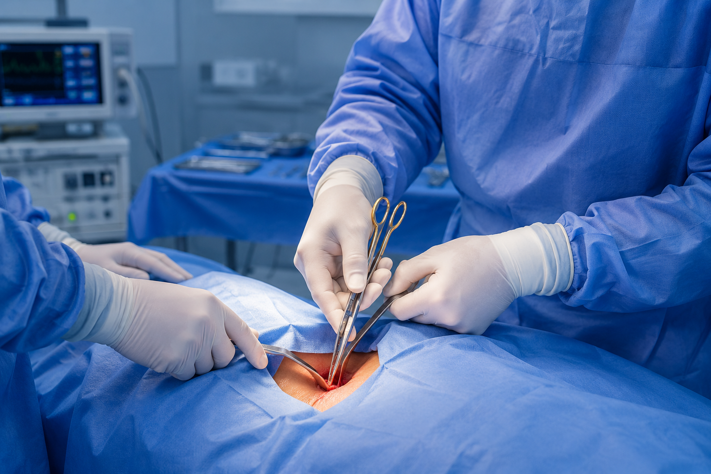

Piles - medically known as Haemorrhoids - are swollen and inflamed veins in the rectum or around the anus that cause pain, bleeding and discomfort. When conservative treatments fail to provide relief, surgical intervention becomes the most effective and permanent solution. At Rashtrotthana Hospital, we offer advanced piles surgery in Bangalore including Laser Haemorrhoidectomy, Stapler Surgery (MIPH) and conventional procedures - tailored to the grade and severity of your condition.
If you experience rectal bleeding, severe anal pain, persistent itching or a lump around the anus - do not ignore these symptoms. Untreated piles can progress from Grade I to Grade IV, making treatment more complex and recovery longer. Early consultation leads to faster, simpler treatment.
At Rashtrotthana Hospital, our experienced general and colorectal surgeons provide minimally invasive piles treatment in Bangalore - with day-care procedures, minimal post-operative pain, and quick return to daily routines.
Our experienced surgeons evaluate the grade of haemorrhoids, your symptoms and overall health to recommend the most effective and least invasive treatment approach.
The most advanced and preferred piles treatment - a precise laser beam is used to shrink and seal haemorrhoidal tissue with no cuts, no stitches and minimal bleeding. Performed as a day-care procedure with very little post-operative pain and return to work in 2–3 days.
Minimally Invasive Procedure for Haemorrhoids (MIPH) - a circular stapler device removes the excess haemorrhoidal tissue and repositions the remaining tissue. Ideal for Grade III and IV piles, with less pain than conventional surgery and faster recovery.

Traditional open surgical removal of haemorrhoids - recommended for large, complex or mixed haemorrhoids where other approaches are not suitable. Provides a definitive, long-term cure with complete removal of haemorrhoidal tissue.

{{ card.sub }}
Talk to our specialists - get a diagnosis, treatment recommendation and cost estimate today.
Your complete care journey - from first consultation to full recovery after piles surgery in Bangalore.
{{ step.desc }}
Most piles procedures are completed in under 30 minutes - patients go home the same day and return to normal routines in 2–3 days.
Answers to the most common questions about haemorrhoids, treatment options, costs, insurance and recovery.